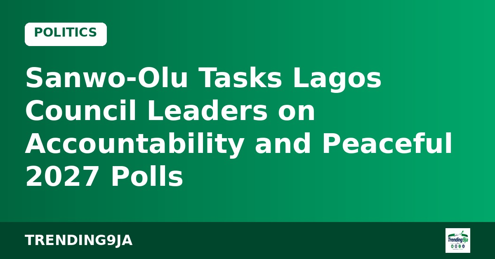

IBB and Abdulsalami Endorse Tinubu Ahead of 2027 Polls, Says Gbajabiamila
Presidential Chief of Staff Femi Gbajabiamila claims former military leaders Ibrahim Babangida and Abdulsalami Abubakar have expressed support for President Bola Tinubu.

Lagos State Governor Babajide Sanwo-Olu has directed administrators across the state’s 57 local councils to maintain financial transparency and help ensure a peaceful political transition ahead of the 2027 general elections.
The governor gave the charge on Friday during a retreat organized for council chairmen and their deputies in Ikeja, according to Vanguard. The program was put together by the state Ministry of Local Government, Chieftaincy Affairs and Rural Development to focus on local governance and democratic transition.
Speaking through the Secretary to the State Government, Mrs Abimbola Salu-Hundeyin, Sanwo-Olu emphasized that local authorities are closest to citizens. He noted that they hold critical responsibilities, such as fixing community roads, managing waste, maintaining markets, supporting basic education, improving healthcare centers, and enhancing local security.
Addressing the financial autonomy granted to local administrations under President Bola Tinubu, Sanwo-Olu stressed that increased funding must result in visible grassroots development. He urged local leaders to practice financial discipline and focus spending on the urgent needs of their communities.
The governor also cautioned council officials against allowing political activities to distract them from primary duties such as healthcare and sanitation. Furthermore, the Special Adviser on Local Government, Dr Yekini Agbaje, called on the council executives to educate residents on peaceful civic engagement as the election period approaches.
Sources: Vanguard
← More Politics storiesNigeria's trending news, politics and entertainment, straight to your email.
By subscribing you agree to our Privacy Policy. Unsubscribe any time.